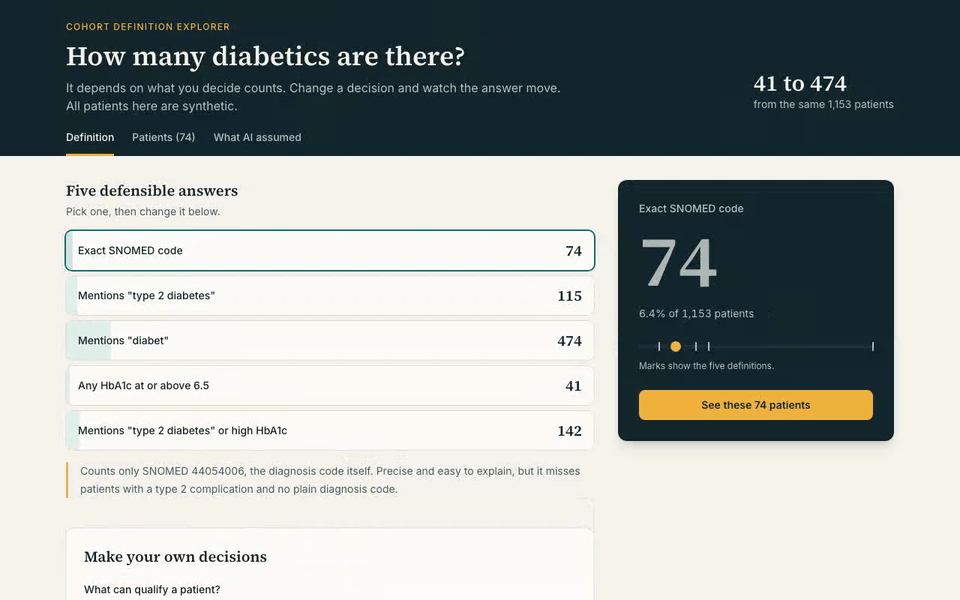

Naive agentContext-aware agent
Gave a valid patient count
Naive · 8Context · 5
Named the definition behind its count
Naive · 0Context · 3
Said the answer depends on the definition
Naive · 0Context · 5
Neither agent invented a number in any run.
Phenotyping · LLM agentsqwen2.5:7b-instruct · 10 runs each
Cohort Definition Explorer
Key result
- Test
- Context-aware runs that said the count depends on the definition
- Result
- 5 of 10
- Flag
- H (high)
- Reference
- naive agent: 0 of 10
context-aware runs said the answer depends on the definition. The naive agent never did, and gave a confident number every time.
The follow-up to Counting Diabetics, as a full-stack app. You build a cohort definition, watch the count change live, and see which rows qualified each patient. It also asks a naive LLM agent and a context-aware one the same question, then decodes which hidden definition each answer actually used.
- Live mode recovers the patients behind an agent's query and matches them to a definition in the builder.
- Flags answers that counted records instead of patients, or used no tool at all.
- Runs offline by default: saved results, no API keys needed.
FastAPIReactOllamaClaude APITool use